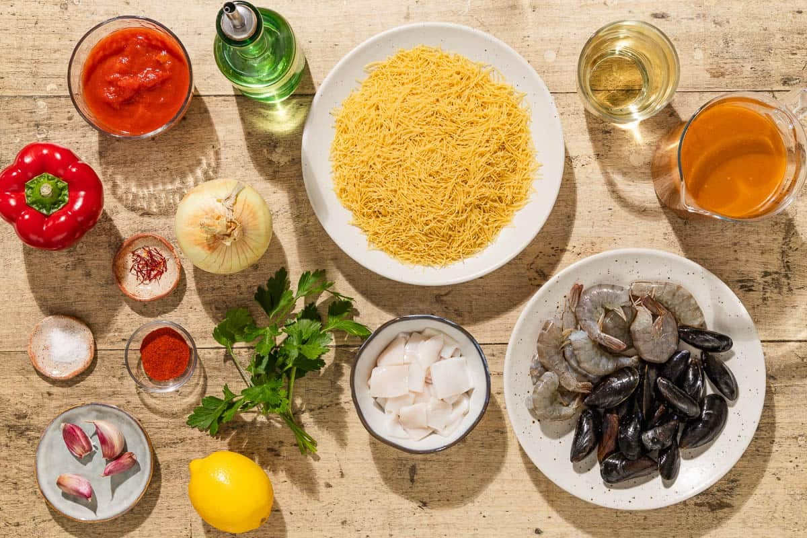
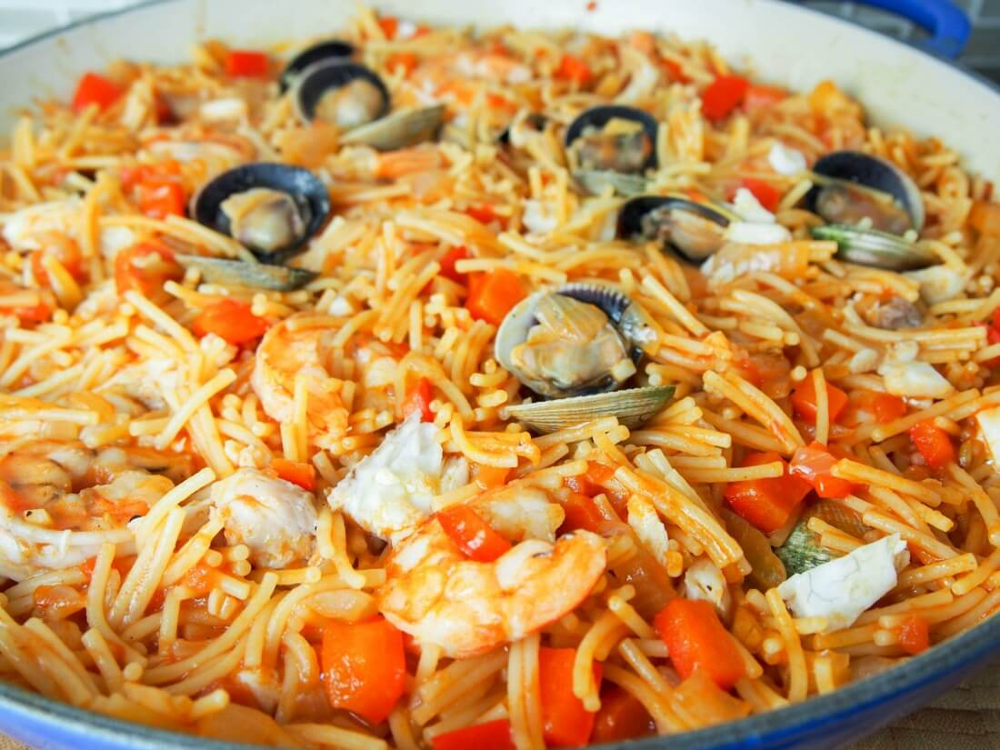
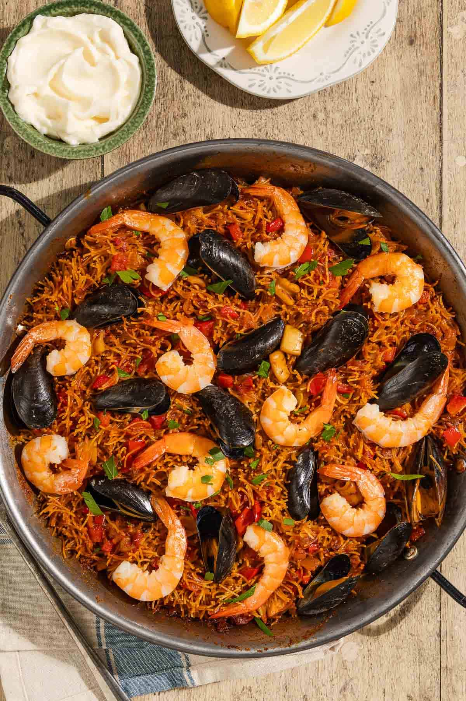
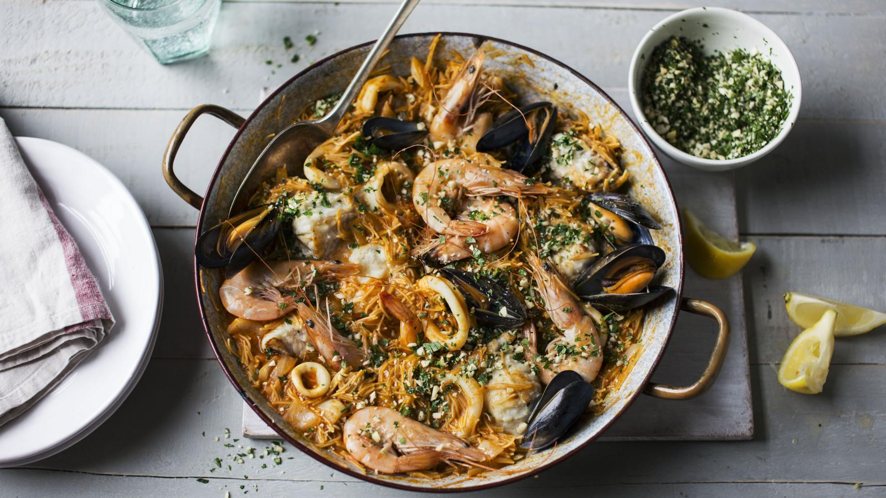
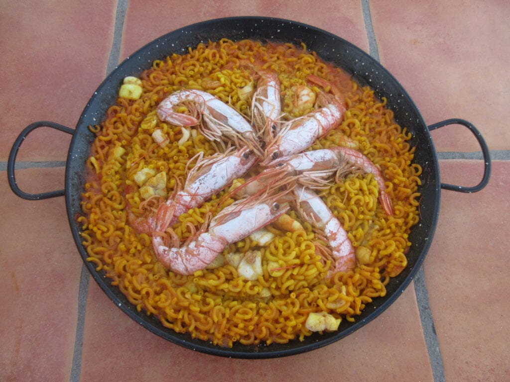

Fideuà de peix i marisc
Aquest plat tradicional mariner i representatiu de la gastronomia mediterrània s’elabora de manera semblant a la paella. Es diu que a uns pescadors se’ls va oblidar l’arròs i van decidir posar a la paella l’únic que van trobar: uns fideus.
La fideuà s’elabora en una paella i porta com a ingredients principals peix, marisc i fideus de pasta.
És un plat fàcil de cuinar i una mica laboriós però el resultat bé s’ho mereix!
Ingredients:
- 400 grams de fideus per a fideuà
- 1 sípia mitjana i neta
- 8 gambes o llagostins
- 1 litre de brou de peix (fumet)
- 1 ceba
- 1 pebrot verd petit
- 2 grans d’all
- 1 tomàquet madur ratllat
- 1 cullerada de pebre vermell dolç
- Uns brins de safrà
- Oli d’oliva verge extra i sal

Passos a seguir:
- Pica la ceba, el pebrot verd i els alls ben petits. Talla la sípia a daus. Posa un bon raig d’oli a la paella i, quan estigui calent, salta les gambes o els llagostins volta i volta. Retira’ls i reserva’ls.
- A la mateixa paella, afegeix la ceba i el pebrot i sofregeix a foc lent fins que estiguin ben tous. Afegeix els alls picats i, un minut després, la sípia. Puja el foc i cuina-la fins que perdi l’aigua i comenci a daurar-se.
- Abaixa el foc, afegeix el pebre vermell, remena ràpidament perquè no es cremi i, de seguida, incorpora el tomàquet ratllat. Deixa que el sofregit es concentri bé fins que l’oli se separi del tomàquet.
- Afegeix els fideus a la paella i rosseja’ls durant un parell de minuts, remenant constantment perquè s’impregnin de tot el gust del sofregit i agafin un color daurat.
- Aboca el brou de peix, que ha d’estar bullint, a la paella. Reparteix bé els fideus, afegeix el safrà, si n’hi poses, i rectifica de sal. Cou a foc mitjà-alt durant el temps que indiqui el fabricant dels fideus (uns 10-12 minuts).
- Quan faltin un parell de minuts per acabar la cocció, col·loca les gambes que havies reservat per sobre de forma decorativa. Deixa que la fideuà acabi de coure i que el brou s’evapori gairebé del tot. Perquè els fideus quedin “de punta”, pots posar la paella al forn preescalfat a 200 ºC (funció grill) durant els últims dos minuts.
- (Opcional) Mentrestant, pots preparar l’allioli tradicional: pica els alls amb sal al morter fins a obtenir una pasta ben fina. A continuació, afegeix-hi l’oli, primer gota a gota i després en un fil prim, sense deixar de remenar enèrgicament amb la mà de morter fins que emulsioni i quedi ben lligat.
- La fideuà catalana s’ha de deixar reposar uns minuts fora del foc abans de servir-la, idealment a la mateixa paella al centre de la taula. La fideuà amb allioli és la combinació guanyadora; serveix un bol d’allioli casolà al costat perquè cada comensal se’n posi al gust.
Possibles presentacions:





Molt bona!!! Ideal ara que ve el bon temps
El plat molt bo pero una mica complicat, faltaria descripció amb mes imatges del pas a pas